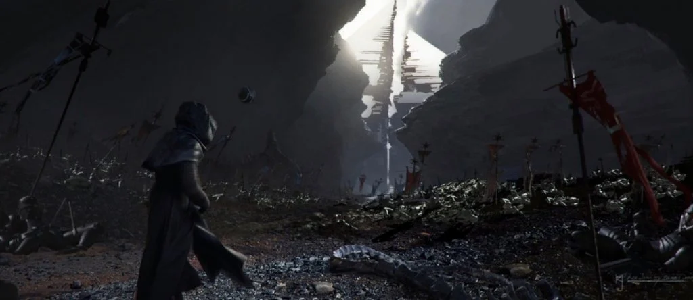

Poe briefs the Resistance on the plan for the Capitol assault.
He reminds them communication between all neighboring systems has been silenced by a virtually invincible transmission jammer located deep within the First Order Capitol on Coruscant. Although their forces are far too depleted to mount a full-frontal assault, they can dispatch a small team to use the Old Republic Force beacon to rally the rest of the galaxy to war.
Rey wants to hunt down Kylo alone, but Poe insists on going with her. She is convinced when he tells her of Nomi, a force sensitive navigator who should be able to locate Mortis. Rey reluctantly agrees to let him, Chewie, and BB-8 tag along.
Kylo monologues to Vader's burned mask, saying, "I will succeed where you failed." He then drops the mask from his balcony in the Capitol, letting it fall a thousand feet, where it shatters in the depths of Coruscant. He then boards his Tie Silencer and sets a course for Remnicore.
Commander Sellik informs Chancellor Hux that the Resistance has been located. Hux instructs him to ready his ship and orders him not to inform Kylo, for he believes he and Rey will destroy themselves attempting to fulfill the "empty promises of their ancient religion."
Our heroes say their goodbyes. Rey tells Leia that she believes Ben can be saved, but even Leia has given up on him.
Leia tells Rey she doesn't believe in the rules of the Jedi. She says, "You're not like my father. Or my brother. You're new. Whatever happens, remember: the Force chose you, Rey. Your story isn't written by anyone else."
Suddenly, explosions. The First Order has launched an ambush.
The First Order's Finalizer ship blows up the entire planet. The remnants of the Resistance barely escape, managing to put the Dreadnaught in hyperdrive at the last second.
Rey, Poe, Chewie, and BB-8 aren't so lucky.
Unable to use lightspeed due to the scattered, rocky remnants of Korilev, Rey, Poe, Chewie, and BB-8 must navigate their way through the debris. Suddenly, the Knife 9 emerges in hot pursuit. A chase ensues, and the Falcon manages to escape after blasting a snowy mountain peak in the rubble ahead of them and rocketing into hyperspace.
Despite not seeing the Falcon take off or even tracking it, the Knights of Ren know where they went using the Force. They set course for Bondan in hot pursuit.
Kylo lands on Remnicore and makes his way towards a Sith temple.
Kylo Ren explores Remnicore.

Kylo Ren approaches the Sith temple on Remnicore.
Within the temple, Kylo meets Tor Valumn, the 7,000 year old Sith lord. Tor Valum tells Kylo to sever himself from the past, then says, "The Living Force is nourishmnet. The more one consumes, the stronger one becomes. To take life... is to cheat death."

Tor Valum, master of Darth Plagueis.
Kylo responds, "Teach me."
The planet of Bondan.
The Millenium Falcon lands on Bondan in a docking array. Poe and Chewie argue with locals and persuade them to allow them to dock.

The Bondan docking array.
Rey and Poe explore the Bondan nightmarket on a junk boat ferry and share a romantic moment. They're interrupted by a local merchant, who aggressively attempts to feed them soup. Rey and Poe decline, but the alien causes a scene that attracts the attention of local Mechtroopers. In a panic, Rey grabs Poe by the shirt, pulls him in, and kisses him. This is enough to make the Mechtrooper go away. The two awkwardly regroup and go to seek Nomi, who may know where Mortis is.

Bondan junk boat ferries.
In the navigator's den, Nomi guides Rey through a meditation so she may find the location of Mortis from within. She again sees the same vision as earlier, with the snowy peak, ancient throne room, and Kylo striking her down. Nomi ominously says, "There she will make the sacrifice."
Poe, very disturbed by this statement, pesters Naomi to elaborate, but she doesn't.
Finn, Rose, R2-D2, and C-3PO descend to the depths of Coruscant in the Phantom Hawk. R2-D2 and C-3PO are dropped off at street level. Finn and Rose grapple to the spire of the abandoned Jedi Temple. Inside, it's decrepid and unrecognizeable. Finn and Rose manage to reeal and power on the Force beacon, but it immediately shorts out and goes dark.
Tor Valum watches as Kylo drains the life from local organisms. As Kylo drains the Living Force of other living things, he appears empowered, his scars slowly receding.

Kylo drains the Living Force from a tree.
Kylo wants to absorb more of the Living Force, but Tor Valum tells him that he has consumed all that remains. A cave catches Kylo's eye, and after Tor tells Kylo there is more within the cave, Kylo enters.

Kylo enters the cave on Remnicore, igniting his lightsaber to illuminate the cave.
In the cave, Kylo is met with a vision of Darth Vader. The two proceed to duel, and Kylo loses handily.

Kylo Ren duels a vision of Darth Vader.
Stricken with anger, Kylo exits the cave. He force holds Tor Valum and demands he tell him the location of Mortis. Tor refuses and tells Kylo he is not ready, but Kylo doesn't care. He pries into Tors mind, discovers the location of Mortis, and promptly drains the Living Force from him, leaving his withered shell of a corpse behind.
Rey senses a disturbance in the Force. Poe asks her what's wrong, to which she responds, "He's growing stronger. We don't have much time."
Finn and Rose manage to fix the Force beacon.
Finn and Rose fixing the Force Beacon. In the script, C-3PO and R2-D2 are not present for this scene.
Below, R2-D2 projects a hologram message directly into the datastream.

This scene doesn't appear in the script. This is likely Leia recording the message that the Force beacon sends across the galaxy.
An inspiring message from Leia, calling everyone to arms, is broadcasted across the galaxy.
On Remnicore, Kylo senses the Force beacon, which is visible traveling across the sky above. He closes his eyes, concentrates, and holds out his hand. The rocks around him vibrate, and the light in the sky halts.
In space, the light is frozen in place, thrumming as pressure builds.
The beam within the temple grows in intensity. Recognizing something's wrong, Finn and Rose dive away just as the Force beacon explodes.
The fire of revolution has been extinguished. Elsewhere, Leia feels a crushing sense of defeat, and Rey frantically grabs Poe and begins sprinting back to the Falcon.
R2-D2 and C-3PO narrowly escape the crumbling Jedi temple. Finn and Rose escape as well, only to be immediately ambushed by TIE Fighters. Both are wounded.
Rey collapses in the Bondan marketplace. She feels Finn's pain. She looks up at Poe for reassurance, but he's distracted by a figure in the crowd.
Hattaska Ren.
They hop on a Razorsail and attempt to make their escape. The Knights of Ren give chase in the Knife 9.

The Knights of Ren pilot the Knife 9, chasing Rey and Poe on a Bondan Razorsail.
The Razorsail is destroyed, but somehow, Rey and Poe make it back to the landing platform, which had been lowered to water level. An adjacent landing pad lowers itself from above, becoming even with theirs. On it is the Knife 9 and the four Knights of Ren.
A battle ensues. Rey attempts to fight Hattaska, Ott, and Lorl all at once and is clearly outmatched. Poe and Chewbacca fire at Jaedec, who deflects their shots with one hand while firing back using a fully auto blaster pistol with the other. After a brief lightsaber vs darksaber duel, Rey force pushes Hattaska to a landing pad below. She then takes on Ott and Lorl, who move in perfect sync.
Poe is shot. His painful scream fills Rey with rage. So much so that she kicks Lorl away, kills Ott with a single stroke, then force pulls Lorl back into her lightsaber blade, impaling him. Hattaska returns, so Rey disconnects the end of her saber not stuck to Lorl and resumes battle.
Meanwhile, Chewbacca approaches Jaedec, who continues to block all his fire. He reaches Jaedec, grabs him by the neck, hurls him off the landing pad, then shoots him out of the sky like a clay pigeon.

Chewbacca prepares to throw Jaedec off the landing pad.
Rey's duel with Hattaska is intense. He manages to disarm her, and he raises his Darksaber for the kill. Rey looks him straight in the eyes, and it triggers a repressed memory within her. This traumatic memory stirs a deep, vengeful anger in her. As he brings his saber down, purple force lightning flows from her fingertips, reducing Hattaska to a smoldering pile of ash.
Exhausted and shocked, Poe and Chewbacca head back to the Falcon, but Rey doesn't follow.
Poe urges her to come with them, but Rey declines. Rey tries to tell him that the Resistance needs him and he can't go to Mortis with her, but he doesn't listen. Poe refuses to leave Rey, leaving her with no choice. Poe knows what's coming, too. They both hate it.
Rey uses a Jedi mind trick to make Poe get back on the ship. Because of his strong will and her conflicted feelings, it takes her three tries. When it finally works, she kisses him and lets him go.
BB-8 faithfully looks up at Rey. She sends him back to the Falcon too.
She boards the Knife 9 and sets a course for Mortis.
Kylo Ren contacts Chancellor Hux via a holocom transmission. He tells Hux that he was responsible for stopping the beacon, and orders him to show the insurgents the strength of their Empire.
On the Dreadnaught, Leia has a conversation with Luke's ghost. Luke worries because Ben will soon become more powerful than their father and because Rey feels too much love and anger.
Leia responds, "Trust her instincts. She may not follow the path of the Jedi, but she's our only hope."